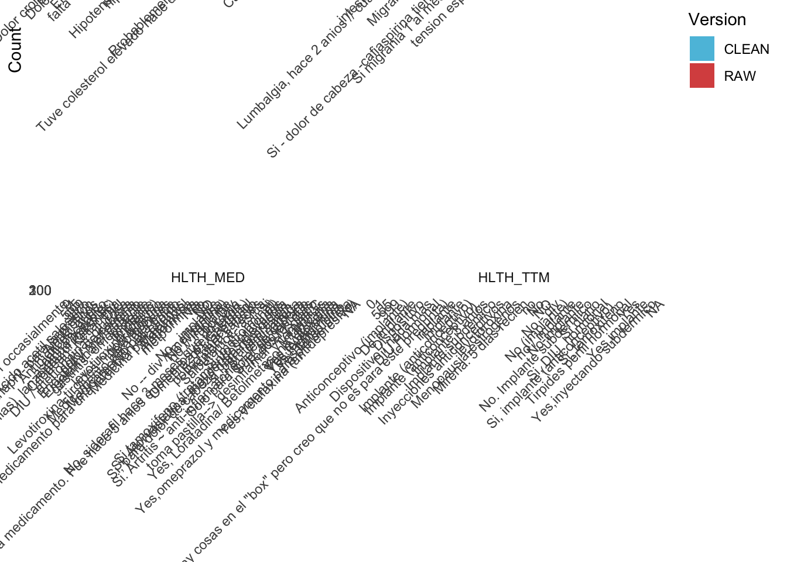
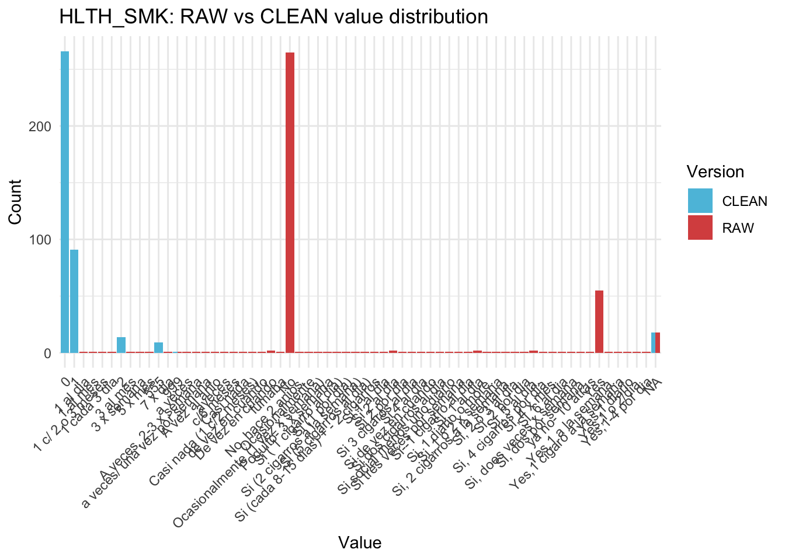
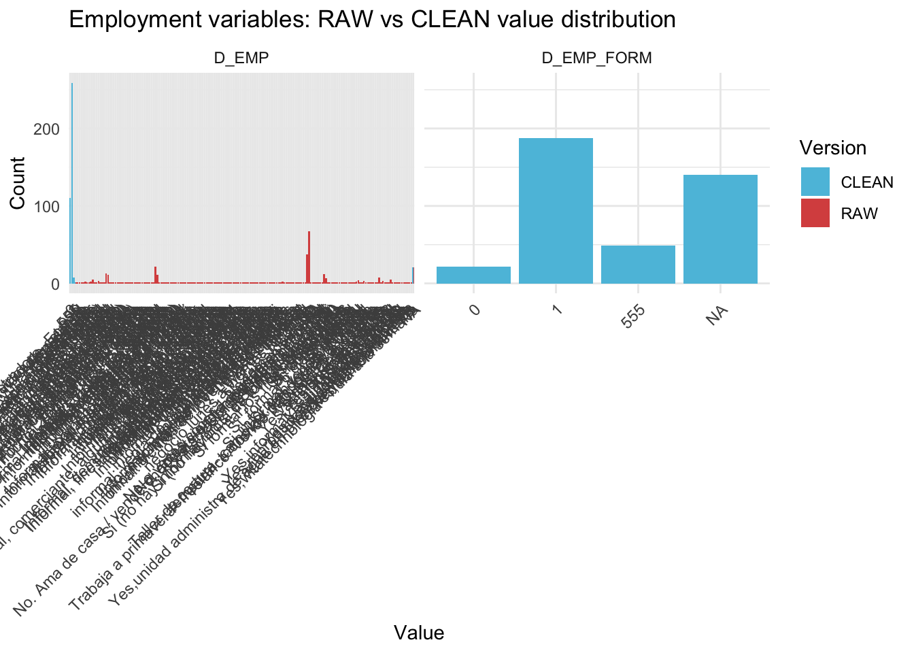
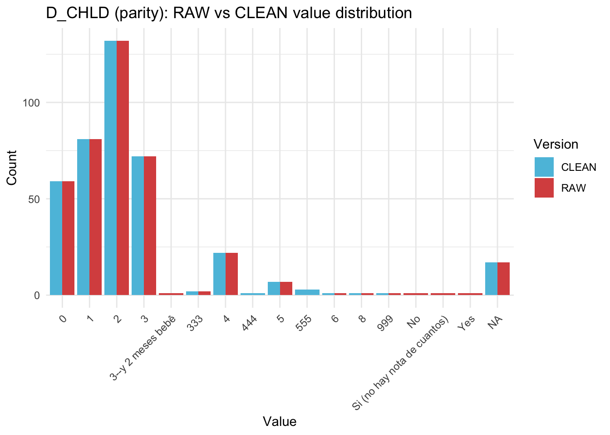

Last updated: 2026-03-06
Checks: 6 1
Knit directory: QUAIL-Mex/
This reproducible R Markdown analysis was created with workflowr (version 1.7.1). The Checks tab describes the reproducibility checks that were applied when the results were created. The Past versions tab lists the development history.
The R Markdown file has unstaged changes. To know which version of
the R Markdown file created these results, you’ll want to first commit
it to the Git repo. If you’re still working on the analysis, you can
ignore this warning. When you’re finished, you can run
wflow_publish to commit the R Markdown file and build the
HTML.
Great job! The global environment was empty. Objects defined in the global environment can affect the analysis in your R Markdown file in unknown ways. For reproduciblity it’s best to always run the code in an empty environment.
The command set.seed(20241009) was run prior to running
the code in the R Markdown file. Setting a seed ensures that any results
that rely on randomness, e.g. subsampling or permutations, are
reproducible.
Great job! Recording the operating system, R version, and package versions is critical for reproducibility.
Nice! There were no cached chunks for this analysis, so you can be confident that you successfully produced the results during this run.
Great job! Using relative paths to the files within your workflowr project makes it easier to run your code on other machines.
Great! You are using Git for version control. Tracking code development and connecting the code version to the results is critical for reproducibility.
The results in this page were generated with repository version 67040b7. See the Past versions tab to see a history of the changes made to the R Markdown and HTML files.
Note that you need to be careful to ensure that all relevant files for
the analysis have been committed to Git prior to generating the results
(you can use wflow_publish or
wflow_git_commit). workflowr only checks the R Markdown
file, but you know if there are other scripts or data files that it
depends on. Below is the status of the Git repository when the results
were generated:
Ignored files:
Ignored: .DS_Store
Ignored: .RData
Ignored: .Rhistory
Ignored: .Rproj.user/
Ignored: analysis/.DS_Store
Ignored: analysis/.RData
Ignored: analysis/.Rhistory
Ignored: analysis/Hrs_by_HWISE score.png
Ignored: analysis/stacked_barplot.png
Ignored: code/.DS_Store
Ignored: data/.DS_Store
Untracked files:
Untracked: 02. Descriptive_stats.Rmd
Untracked: 02.-Descriptive_stats.html
Untracked: analysis/Data_cleaning_HBA2025.Rmd
Untracked: data/Screening_clean.csv
Untracked: data/conflicts_to_review.csv
Untracked: data/~$.Metadata-25-Feb-20.docx
Untracked: figure/
Unstaged changes:
Modified: analysis/Data_cleaning.Rmd
Modified: data/00.Dictionary.csv
Modified: data/01.SCREENING.csv
Note that any generated files, e.g. HTML, png, CSS, etc., are not included in this status report because it is ok for generated content to have uncommitted changes.
These are the previous versions of the repository in which changes were
made to the R Markdown (analysis/Data_cleaning.Rmd) and
HTML (docs/Data_cleaning.html) files. If you’ve configured
a remote Git repository (see ?wflow_git_remote), click on
the hyperlinks in the table below to view the files as they were in that
past version.
| File | Version | Author | Date | Message |
|---|---|---|---|---|
| Rmd | 1865e72 | Paloma | 2026-02-27 | latinxresearchweek2026 |
Data cleaning script for 01.SCREENING.csv. The goal is
to produce a clean, analysis-ready dataset for the descriptive
statistics table and regression models. This script covers: duplicate
merging, missing code assignment, variable recoding, SES composite
scoring, and a missingness summary.
Missing data coding scheme:
No = 0, Yes = 1, Occasionally = 2 (unless variable-specific rules apply). Sentinel codes are preserved in the master file and converted to NA only within analysis scripts.
Important modifications to include in manuscript
library(dplyr)
library(tidyr)
library(stringr)
library(readr)
library(ggplot2)
data_path <- "./data" # cleaned output
raw_path <- "./data" # raw input
MISSING_CODES <- c(999, 888, 777, 666, 555, 444, 333)df_raw <- read.csv(
file.path(raw_path, "01.SCREENING.csv"),
stringsAsFactors = FALSE,
na.strings = c("") # only truly blank cells become NA at read time
)
cat("Raw dimensions:", dim(df_raw), "\n")Raw dimensions: 537 35 cat("Unique IDs in raw file:", length(unique(df_raw$ID)), "\n")Unique IDs in raw file: 399 cat("Duplicate IDs:", sum(duplicated(df_raw$ID)), "\n")Duplicate IDs: 138 Convert known missing-text patterns to NA so they don’t interfere with the merge logic. All other values are preserved.
na_strings <- c("N/A", "n/a", "NA", "na",
"No hay niguna repuesta", "No hay ninguna repuesta")
# "pending" means data exists but was not entered — code as 333, not NA
pending_strings <- c("pending", "Pending", "PENDING")
df_raw <- df_raw %>%
mutate(across(where(is.character), ~ {
x <- str_trim(.)
case_when(
x %in% na_strings ~ NA_character_,
x %in% pending_strings ~ "333",
TRUE ~ x
)
}))Raw copies are created here, before merging or recoding, so that
_RAW columns always reflect the original data entry.
vars_to_preserve <- c("HLTH_TTM", "HLTH_MED", "HLTH_CPAIN",
"HLTH_CDIS", "HLTH_SMK", "D_EMP_TYPE", "D_CHLD")
df_raw <- df_raw %>%
mutate(across(all_of(vars_to_preserve),
~ ., .names = "{.col}_RAW"))For IDs with two rows, take the non-NA value when rows differ. If both rows have different non-NA values for the same field, the conflict is flagged with 444 (Ambiguous) so you can review manually.
merge_rows <- function(df_group) {
if (nrow(df_group) == 1) return(df_group)
merged <- df_group[1, , drop = FALSE] # start with first row as template
# Skip ID — it is the same by definition
skip_cols <- c("ID")
for (col in setdiff(names(df_group), skip_cols)) {
v1 <- df_group[[col]][1]
v2 <- df_group[[col]][2]
both_na <- is.na(v1) & is.na(v2)
only_v2 <- is.na(v1) & !is.na(v2)
both_same <- !is.na(v1) & !is.na(v2) &
(str_trim(tolower(as.character(v1))) ==
str_trim(tolower(as.character(v2))))
conflict <- !is.na(v1) & !is.na(v2) &
(str_trim(tolower(as.character(v1))) !=
str_trim(tolower(as.character(v2))))
if (both_na) { merged[[col]] <- NA }
else if (only_v2) { merged[[col]] <- v2 }
else if (both_same) { merged[[col]] <- v1 }
else if (conflict) {
# Free-text/notes columns: concatenate instead of flagging
if (col %in% c("D_LOC_INFO", "D_HH_SIZE_INFO", "D_INFO",
"SES_INFO", "HLTH_CPAIN_CAT", "HLTH_CDIS_CAT")) {
merged[[col]] <- paste(v1, v2, sep = " | ")
} else {
merged[[col]] <- "444" # Ambiguous — review manually
}
}
}
return(merged)
}
df <- df_raw %>%
group_by(ID) %>%
group_modify(~ merge_rows(.x)) %>%
ungroup()
cat("Rows after merging duplicates:", nrow(df), "\n")Rows after merging duplicates: 399 # Report which fields were flagged as ambiguous
ambig_flags <- df %>%
select(-ID) %>%
summarise(across(everything(), ~ sum(. == "444", na.rm = TRUE))) %>%
pivot_longer(everything(), names_to = "variable", values_to = "n_ambiguous") %>%
filter(n_ambiguous > 0)
cat("\nFields with ambiguous (444) values after merge:\n")
Fields with ambiguous (444) values after merge:print(ambig_flags, n=nrow(ambig_flags))# A tibble: 31 × 2
variable n_ambiguous
<chr> <int>
1 D_YRBR 3
2 D_AGE 51
3 D_LOC_CODE 4
4 D_LOC_TIME 2
5 HLTH_SMK 3
6 HLTH_MED 1
7 HLTH_CPAIN 2
8 HLTH_CDIS 3
9 D_HH_SIZE 5
10 D_CHLD 3
11 D_EMP_TYPE 6
12 W_HH_SIZE 2
13 W_STORAGE 2
14 SES_EDU_CAT 4
15 SES_EDU_SC 1
16 SES_BTHR_CAT 1
17 SES_BTHR_SC 1
18 SES_CAR_CAT 1
19 SES_CAR_SC 1
20 SES_INT_CAT 1
21 SES_INT_SC 1
22 SES_WRK_CAT 2
23 SES_WRK_SC 2
24 SES_BEDR_CAT 1
25 SES_BEDR_SC 1
26 HLTH_MED_RAW 1
27 HLTH_CPAIN_RAW 2
28 HLTH_CDIS_RAW 3
29 HLTH_SMK_RAW 3
30 D_EMP_TYPE_RAW 6
31 D_CHLD_RAW 3# Print ID and conflicting values for manual review
for (v in ambig_flags$variable) {
cat("\n---", v, "---\n")
conflict_ids <- df %>%
filter(.data[[v]] == "444") %>%
pull(ID)
print(df_raw %>%
filter(ID %in% conflict_ids) %>%
select(ID, all_of(v)))
}
--- D_YRBR ---
ID D_YRBR
1 70 1989
2 70 1984
3 329 2001
4 329 2002
5 376 1993
6 376 1998
--- D_AGE ---
ID D_AGE
1 70 33
2 70 38
3 322 33
4 322 34
5 324 20
6 324 21
7 325 43
8 325 44
9 326 35
10 326 36
11 327 27
12 327 28
13 328 43
14 328 44
15 331 34
16 331 35
17 332 45
18 332 46
19 333 31
20 333 32
21 335 27
22 335 28
23 336 32
24 336 33
25 337 33
26 337 34
27 338 22
28 338 23
29 339 37
30 339 38
31 340 30
32 340 31
33 341 33
34 341 34
35 343 27
36 343 28
37 344 30
38 344 31
39 345 24
40 345 25
41 362 28
42 362 29
43 364 33
44 364 34
45 365 32
46 365 33
47 366 43
48 366 44
49 367 32
50 367 33
51 368 41
52 368 42
53 369 32
54 369 33
55 370 34
56 370 35
57 371 37
58 371 38
59 372 30
60 372 31
61 373 31
62 373 32
63 374 37
64 374 38
65 375 25
66 375 24
67 376 29
68 376 25
69 377 19
70 377 20
71 378 22
72 378 23
73 379 38
74 379 39
75 380 39
76 380 40
77 381 18
78 381 19
79 382 27
80 382 28
81 383 24
82 383 25
83 384 44
84 384 45
85 385 21
86 385 22
87 386 20
88 386 21
89 387 22
90 387 23
91 388 37
92 388 38
93 389 33
94 389 34
95 390 26
96 390 27
97 391 29
98 391 30
99 393 29
100 393 30
101 395 18
102 395 19
--- D_LOC_CODE ---
ID D_LOC_CODE
1 44 09900 09910
2 44 9900
3 70 9940
4 70 9620
5 391 9690
6 391 9640
7 496 9960
8 496 9780
--- D_LOC_TIME ---
ID D_LOC_TIME
1 70 15
2 70 38
3 394 3
4 394 31
--- HLTH_SMK ---
ID HLTH_SMK
1 24 No
2 24 Yes
3 167 No
4 167 Yes
5 202 1 al dia
6 202 No
--- HLTH_MED ---
ID HLTH_MED
1 202 Lozzartan- presion
2 202 No
--- HLTH_CPAIN ---
ID HLTH_CPAIN
1 70 Si- Migrania
2 70 No
3 75 Si gastritis
4 75 No
--- HLTH_CDIS ---
ID
1 9
2 9
3 70
4 70
5 202
6 202
HLTH_CDIS
1 No
2 Dolor cronico: dolor cabeza 2 al mes
3 Sospecha que tiene artritis o hipotension, pero no esta diagnosticada, sido lo siente
4 No
5 hipotension (presion baja)
6 No
--- D_HH_SIZE ---
ID D_HH_SIZE
1 70 20
2 70 9
3 190 6
4 190 3
5 191 3
6 191 8
7 202 3
8 202 15
9 310 3
10 310 13
11 310 <NA>
--- D_CHLD ---
ID D_CHLD
1 202 2
2 202 1
3 415 333
4 415 2
5 427 1
6 427 4
7 427 4
--- D_EMP_TYPE ---
ID
1 202
2 202
3 302
4 302
5 302
6 320
7 320
8 320
9 323
10 323
11 323
12 334
13 334
14 334
15 394
16 394
D_EMP_TYPE
1 informal--hace limpieza--vende ropa que regalan--> quedo sin trabajo. --> les cortan para no dar aguinaldo. Lava ropa, no tiene trabajo fitable. Hizo c/TDH, no puede unidarlo. | cuando tiene mucho trabajo, apurados. Cuando no trabaja se deprime.
2 Formal
3 formal
4 Formal, empleada en bodega
5 <NA>
6 Trabajo domestico. Trabajo comerciante.
7 informal
8 <NA>
9 tiene un negocio
10 formal
11 <NA>
12 Si, seguridad privada.
13 formal
14 <NA>
15 Comerciante
16 Informal
--- W_HH_SIZE ---
ID W_HH_SIZE
1 453 15
2 453 viven mas familias ahi. llave sole en lavando
3 483 Cisterna-mirasoles
4 483 No hay informacion
5 483 <NA>
6 483 Cisterna-mirasoles
--- W_STORAGE ---
ID W_STORAGE
1 427 tambos chiquitos--> turnos (3 famen terreno) --> una toma de agua
2 427 tambos chiquitos --> turnos (3 fam en terreno) --> una toma de agua
3 427 tambos chiquitos --> turnos (3 fam en terreno) --> una toma de agua
4 476 tinaco --> bathroom (baniarse)\nbotes--> 2 llaves directo de calle
5 476 Tinaco--> bathroom. Botes--> 2 llaves directo de calle
--- SES_EDU_CAT ---
ID SES_EDU_CAT
1 70 Secundaria completa
2 70 Preparatoria completa
3 103 Bachillerato, carrera tecnica completa. 35 (3 march 2023)
4 103 Preparatoria incompleta
5 327 Licenciatura incompleta
6 327 carrera tecnica bachi
7 427 5 to de primaria
8 427 Primaria incompleta
9 427 Primaria incompleta
--- SES_EDU_SC ---
ID SES_EDU_SC
1 70 31
2 70 43
--- SES_BTHR_CAT ---
ID SES_BTHR_CAT
1 70 1 bathroom
2 70 0 bathrooms
--- SES_BTHR_SC ---
ID SES_BTHR_SC
1 70 24
2 70 0
--- SES_CAR_CAT ---
ID SES_CAR_CAT
1 70 1 car
2 70 0 cars
--- SES_CAR_SC ---
ID SES_CAR_SC
1 70 18
2 70 0
--- SES_INT_CAT ---
ID SES_INT_CAT
1 202 NO
2 202 SI
--- SES_INT_SC ---
ID SES_INT_SC
1 202 0
2 202 31
--- SES_WRK_CAT ---
ID SES_WRK_CAT
1 70 2 personas
2 70 3 personas
3 202 1 persona
4 202 4 o mas personas
--- SES_WRK_SC ---
ID SES_WRK_SC
1 70 31
2 70 46
3 202 15
4 202 61
--- SES_BEDR_CAT ---
ID SES_BEDR_CAT
1 70 2 cuartos
2 70 4 cuartos o mas
--- SES_BEDR_SC ---
ID SES_BEDR_SC
1 70 12
2 70 23
--- HLTH_MED_RAW ---
ID HLTH_MED_RAW
1 202 Lozzartan- presion
2 202 No
--- HLTH_CPAIN_RAW ---
ID HLTH_CPAIN_RAW
1 70 Si- Migrania
2 70 No
3 75 Si gastritis
4 75 No
--- HLTH_CDIS_RAW ---
ID
1 9
2 9
3 70
4 70
5 202
6 202
HLTH_CDIS_RAW
1 No
2 Dolor cronico: dolor cabeza 2 al mes
3 Sospecha que tiene artritis o hipotension, pero no esta diagnosticada, sido lo siente
4 No
5 hipotension (presion baja)
6 No
--- HLTH_SMK_RAW ---
ID HLTH_SMK_RAW
1 24 No
2 24 Yes
3 167 No
4 167 Yes
5 202 1 al dia
6 202 No
--- D_EMP_TYPE_RAW ---
ID
1 202
2 202
3 302
4 302
5 302
6 320
7 320
8 320
9 323
10 323
11 323
12 334
13 334
14 334
15 394
16 394
D_EMP_TYPE_RAW
1 informal--hace limpieza--vende ropa que regalan--> quedo sin trabajo. --> les cortan para no dar aguinaldo. Lava ropa, no tiene trabajo fitable. Hizo c/TDH, no puede unidarlo. | cuando tiene mucho trabajo, apurados. Cuando no trabaja se deprime.
2 Formal
3 formal
4 Formal, empleada en bodega
5 <NA>
6 Trabajo domestico. Trabajo comerciante.
7 informal
8 <NA>
9 tiene un negocio
10 formal
11 <NA>
12 Si, seguridad privada.
13 formal
14 <NA>
15 Comerciante
16 Informal
--- D_CHLD_RAW ---
ID D_CHLD_RAW
1 202 2
2 202 1
3 415 333
4 415 2
5 427 1
6 427 4
7 427 4conflict_rows <- list()
for (v in ambig_flags$variable) {
conflict_ids <- df %>%
filter(.data[[v]] == "444") %>%
pull(ID)
tmp <- df_raw %>%
filter(ID %in% conflict_ids) %>%
select(ID, all_of(v)) %>%
mutate(across(c(ID, all_of(v)), as.character)) %>%
group_by(ID) %>%
summarise(value_1 = first(.data[[v]]),
value_2 = last(.data[[v]]),
.groups = "drop") %>%
mutate(variable = v, resolution = NA_character_)
conflict_rows[[v]] <- tmp
}
conflicts <- bind_rows(conflict_rows) %>%
select(ID, variable, value_1, value_2, resolution)
# Uncomment once ready to export:
write.csv(conflicts, file.path(data_path, "conflicts_to_review.csv"),
row.names = FALSE)resolved <- read.csv(file.path(data_path, "conflicts_to_review.csv"),
stringsAsFactors = FALSE)
for (i in seq_len(nrow(resolved))) {
id <- resolved$ID[i]
v <- resolved$variable[i]
val <- resolved$resolution[i]
df[df$ID == id, v] <- val
}cat("Total unique participants:", nrow(df), "\n")Total unique participants: 399 # Season 1: IDs 1-204 (rainy, Oct-Dec 2022)
# Season 2: IDs 301-497 (dry, Apr-Jun 2023)
missing_s1 <- setdiff(1:204, df$ID)
missing_s2 <- setdiff(301:497, df$ID)
cat("Missing IDs in Season 1 (1-204):",
ifelse(length(missing_s1) == 0, "none",
paste(missing_s1, collapse = ", ")), "\n")Missing IDs in Season 1 (1-204): 71, 164 cat("Missing IDs in Season 2 (301-497):",
ifelse(length(missing_s2) == 0, "none",
paste(missing_s2, collapse = ", ")), "\n")Missing IDs in Season 2 (301-497): none # Age check: eligibility was 18-46
out_of_range_age <- df %>%
filter(!is.na(D_AGE) & (as.numeric(D_AGE) < 18 | as.numeric(D_AGE) > 46)) %>%
select(ID, D_YRBR, D_AGE)
cat("\nParticipants outside age eligibility range (18-46):\n")
Participants outside age eligibility range (18-46):print(out_of_range_age)# A tibble: 1 × 3
ID D_YRBR D_AGE
<int> <chr> <chr>
1 10 1979 49 # Flag all non-NA data for out-of-range participants as 999
# NA cells are left as NA (not converted to 999)
out_of_range_ids <- out_of_range_age$ID
df <- df %>%
mutate(across(-ID, ~ {
x <- as.character(.)
ifelse(ID %in% out_of_range_ids & !is.na(x), "999", x)
}))df <- df %>%
mutate(SEASON = case_when(
ID >= 1 & ID <= 204 ~ 0, # 0 = rainy (reference in models)
ID >= 301 & ID <= 497 ~ 1, # 1 = dry
TRUE ~ NA_real_
))
cat("Season distribution:\n")Season distribution:print(table(df$SEASON, useNA = "always"))
0 1 <NA>
202 197 0 No = 0, Yes = 1. Responses with extra text (e.g., “Yes, Loratadina”) are recoded as 1 since the full text is captured in the corresponding _RAW column. Sentinel codes are passed through unchanged.
recode_yesno <- function(x) {
x <- str_trim(tolower(as.character(x)))
case_when(
is.na(x) ~ NA_real_,
x %in% as.character(MISSING_CODES) ~ suppressWarnings(as.numeric(x)),
x %in% c("no", "no.", "no -div") ~ 0,
str_starts(x, "yes") | str_starts(x, "si") ~ 1,
x %in% c("no sabe", "ns") ~ 888,
x %in% c("refused", "prefiero no") ~ 777,
TRUE ~ 555
)
}
binary_vars <- c("HLTH_TTM", "HLTH_MED", "HLTH_CPAIN", "HLTH_CDIS")
df <- df %>%
mutate(across(all_of(binary_vars),
recode_yesno, .names = "{.col}_CLEAN"))
# Visualization: RAW vs CLEAN for all binary variables
binary_long <- df %>%
select(ID,
all_of(paste0(binary_vars, "_RAW")),
all_of(paste0(binary_vars, "_CLEAN"))) %>%
mutate(across(everything(), as.character)) %>%
pivot_longer(-ID,
names_to = c("variable", "version"),
names_pattern = "(.+)_(RAW|CLEAN)") %>%
mutate(value = as.character(value))
ggplot(binary_long, aes(x = value, fill = version)) +
geom_bar(position = "dodge") +
facet_wrap(~ variable, scales = "free_x") +
scale_fill_manual(values = c("RAW" = "#d9534f", "CLEAN" = "#5bc0de")) +
labs(title = "Binary variables: RAW vs CLEAN value distribution",
x = "Value", y = "Count", fill = "Version") +
theme_minimal() +
theme(axis.text.x = element_text(angle = 45, hjust = 1))
0 = No, 1 = Yes/Daily, 2 = Occasionally. Sentinel codes are passed through unchanged.
df <- df %>%
mutate(
HLTH_SMK_CLEAN = case_when(
is.na(HLTH_SMK) ~ NA_real_,
str_trim(tolower(as.character(HLTH_SMK))) %in% as.character(MISSING_CODES) ~ suppressWarnings(as.numeric(HLTH_SMK)),
str_trim(tolower(HLTH_SMK)) %in% c("no", "ya no- 10 atras") ~ 0,
str_trim(tolower(HLTH_SMK)) %in% c(
"de vez en cuando", "a veces", "aveces",
"casi nada", "poquito- 3 x semana", "3 x semana",
"si de vez en cuando", "1 diario", "1 cada 3 dia",
"a veces/ una vez por semana", "ocasionalmente",
"Ocasionalmente (1 vez x semana)", "c/6 meses",
"5 x mes", "A veces, 2-3 x semana", "Casi nada (1 c/2 meses)") ~ 2,
str_starts(tolower(str_trim(HLTH_SMK)), "yes") |
str_starts(tolower(str_trim(HLTH_SMK)), "si") |
str_starts(tolower(str_trim(HLTH_SMK)), "1 al dia") |
str_starts(tolower(str_trim(HLTH_SMK)), "7 x dia") ~ 1,
TRUE ~ 555
),
HLTH_SMK_CAT = factor(HLTH_SMK_CLEAN,
levels = c(0, 1, 2, 555),
labels = c("No", "Yes", "Occasionally", "Other"))
)
cat("Smoking distribution:\n")Smoking distribution:print(table(df$HLTH_SMK_CAT, useNA = "always"))
No Yes Occasionally Other <NA>
266 91 14 9 19 cat("\nUnclassified smoking responses (555):\n")
Unclassified smoking responses (555):df %>% filter(HLTH_SMK_CLEAN == 555) %>%
select(ID, HLTH_SMK_RAW, HLTH_SMK_CLEAN) %>% print()# A tibble: 9 × 3
ID HLTH_SMK_RAW HLTH_SMK_CLEAN
<int> <chr> <dbl>
1 93 Ocasionalmente (1 vez x semana) 555
2 109 A veces, 2-3 x semana 555
3 118 No, hace 2 anios. 555
4 138 A vez al anio 555
5 307 fumaba 555
6 409 3 al mes 555
7 411 1 c/ 2 o 3 meses 555
8 437 1 al mes 555
9 496 Casi nada (1 c/2 meses) 555# Visualization: RAW vs CLEAN
smk_long <- df %>%
select(ID, HLTH_SMK_RAW, HLTH_SMK_CLEAN) %>%
mutate(across(everything(), as.character)) %>%
pivot_longer(-ID, names_to = "version", values_to = "value") %>%
mutate(version = str_remove(version, "HLTH_SMK_"))
ggplot(smk_long, aes(x = value, fill = version)) +
geom_bar(position = "dodge") +
scale_fill_manual(values = c("RAW" = "#d9534f", "CLEAN" = "#5bc0de")) +
labs(title = "HLTH_SMK: RAW vs CLEAN value distribution",
x = "Value", y = "Count", fill = "Version") +
theme_minimal() +
theme(axis.text.x = element_text(angle = 45, hjust = 1))
D_EMP_CLEAN: 0 = Not employed, 1 = Employed D_EMP_FORM_CLEAN: 0 = Informal, 1 = Formal (NA if not employed) Sentinel codes are passed through unchanged.
df <- df %>%
mutate(
D_EMP_TYPE_CLEAN = str_trim(tolower(D_EMP_TYPE)),
D_EMP_CLEAN = case_when(
is.na(D_EMP_TYPE_CLEAN) ~ NA_real_,
D_EMP_TYPE_CLEAN %in% as.character(MISSING_CODES) ~ suppressWarnings(as.numeric(D_EMP_TYPE_CLEAN)),
D_EMP_TYPE_CLEAN %in% c("no", "no.", "niguna", "nada", "ninguna") ~ 0,
str_detect(D_EMP_TYPE_CLEAN, "no\\b") &
!str_detect(D_EMP_TYPE_CLEAN,
"informal|formal|trabaj|vend|comerci") ~ 0,
str_detect(D_EMP_TYPE_CLEAN,
"yes|si|formal|informal|comerci|vend|trabaj|administrat|limpieza|estilista|ama de") ~ 1,
TRUE ~ 555
),
D_EMP_FORM_CLEAN = case_when(
is.na(D_EMP_CLEAN) | D_EMP_CLEAN != 1 ~ NA_real_,
D_EMP_TYPE_CLEAN %in% as.character(MISSING_CODES) ~ suppressWarnings(as.numeric(D_EMP_TYPE_CLEAN)),
str_detect(D_EMP_TYPE_CLEAN, "formal(?!.*informal)") ~ 1,
str_detect(D_EMP_TYPE_CLEAN, "informal") ~ 0,
str_detect(D_EMP_TYPE_CLEAN,
"vend|comerci|limpieza|chocolater|catalogo|ropa|dulces|postres|pintura|facebook") ~ 0,
TRUE ~ 555
)
) %>%
select(-D_EMP_TYPE_CLEAN)
cat("\nEmployment (D_EMP_CLEAN):\n")
Employment (D_EMP_CLEAN):print(table(df$D_EMP_CLEAN, useNA = "always"))
0 1 555 999 <NA>
110 259 8 1 21 cat("\nFormality (D_EMP_FORM_CLEAN, among employed):\n")
Formality (D_EMP_FORM_CLEAN, among employed):print(table(df$D_EMP_FORM_CLEAN, useNA = "always"))
0 1 555 <NA>
22 188 49 140 cat("\nUnclassified employment responses (555):\n")
Unclassified employment responses (555):df %>%
filter(D_EMP_CLEAN == 555 | D_EMP_FORM_CLEAN == 555) %>%
select(ID, D_EMP_TYPE_RAW, D_EMP_CLEAN, D_EMP_FORM_CLEAN) %>%
print()# A tibble: 57 × 4
ID D_EMP_TYPE_RAW D_EMP_CLEAN D_EMP_FORM_CLEAN
<int> <chr> <dbl> <dbl>
1 1 Yes,venta de productos 1 555
2 4 Administrativo esparadico local de produc… 1 555
3 5 Ama de cas 1 555
4 6 Yes,witatechnologia- 1 dia a la semana 1 555
5 13 Yes,vento online FB 1 555
6 30 Yes,asistente de estilista 1 555
7 31 Ma de trabajo? 1 555
8 41 Si 1 555
9 42 Yes,solo fds 1 555
10 45 Comerante 555 NA
# ℹ 47 more rows# Visualization: RAW vs CLEAN for both employment variables
emp_long <- df %>%
select(ID, D_EMP_TYPE_RAW, D_EMP_CLEAN, D_EMP_FORM_CLEAN) %>%
mutate(across(everything(), as.character)) %>%
pivot_longer(-ID, names_to = "variable", values_to = "value") %>%
mutate(
version = if_else(variable == "D_EMP_TYPE_RAW", "RAW", "CLEAN"),
variable = case_when(
variable == "D_EMP_TYPE_RAW" ~ "D_EMP",
variable == "D_EMP_CLEAN" ~ "D_EMP",
variable == "D_EMP_FORM_CLEAN" ~ "D_EMP_FORM"
)
)
ggplot(emp_long, aes(x = value, fill = version)) +
geom_bar(position = "dodge") +
facet_wrap(~ variable, scales = "free_x") +
scale_fill_manual(values = c("RAW" = "#d9534f", "CLEAN" = "#5bc0de")) +
labs(title = "Employment variables: RAW vs CLEAN value distribution",
x = "Value", y = "Count", fill = "Version") +
theme_minimal() +
theme(axis.text.x = element_text(angle = 45, hjust = 1))
Expected: integer 0-4. Non-numeric entries are flagged. Sentinel codes are passed through unchanged.
df <- df %>%
mutate(
D_CHLD_CLEAN = case_when(
is.na(D_CHLD) ~ NA_real_,
str_trim(as.character(D_CHLD)) %in% as.character(MISSING_CODES) ~ suppressWarnings(as.numeric(D_CHLD)),
str_detect(tolower(as.character(D_CHLD)), "no hay nota") ~ 444,
str_detect(tolower(as.character(D_CHLD)), "^si") ~ 444,
!is.na(suppressWarnings(as.numeric(D_CHLD))) ~ suppressWarnings(as.numeric(D_CHLD)),
TRUE ~ 555
)
)
cat("Parity distribution (D_CHLD_CLEAN):\n")Parity distribution (D_CHLD_CLEAN):print(table(df$D_CHLD_CLEAN, useNA = "always"))
0 1 2 3 4 5 6 8 333 444 555 999 <NA>
59 81 132 72 22 7 1 1 2 1 3 1 17 cat("\nFlagged parity values:\n")
Flagged parity values:df %>%
filter(D_CHLD_CLEAN %in% c(333, 444, 555)) %>%
select(ID, D_CHLD_RAW, D_CHLD_CLEAN) %>%
print()# A tibble: 6 × 3
ID D_CHLD_RAW D_CHLD_CLEAN
<int> <chr> <dbl>
1 5 333 333
2 16 Si (no hay nota de cuantos) 444
3 173 Yes 555
4 319 333 333
5 363 No 555
6 493 3--y 2 meses bebê 555# Visualization: RAW vs CLEAN
chld_long <- df %>%
select(ID, D_CHLD_RAW, D_CHLD_CLEAN) %>%
mutate(across(everything(), as.character)) %>%
pivot_longer(-ID, names_to = "version", values_to = "value") %>%
mutate(version = str_remove(version, "D_CHLD_"))
ggplot(chld_long, aes(x = value, fill = version)) +
geom_bar(position = "dodge") +
scale_fill_manual(values = c("RAW" = "#d9534f", "CLEAN" = "#5bc0de")) +
labs(title = "D_CHLD (parity): RAW vs CLEAN value distribution",
x = "Value", y = "Count", fill = "Version") +
theme_minimal() +
theme(axis.text.x = element_text(angle = 45, hjust = 1))
df <- df %>%
mutate(
D_LOC_TIME_RAW = D_LOC_TIME,
D_LOC_TIME_CLEAN = case_when(
is.na(D_LOC_TIME) ~ NA_real_,
str_trim(as.character(D_LOC_TIME)) %in% as.character(MISSING_CODES) ~ suppressWarnings(as.numeric(D_LOC_TIME)),
!is.na(suppressWarnings(as.numeric(D_LOC_TIME))) ~ suppressWarnings(as.numeric(D_LOC_TIME)),
TRUE ~ 555
)
)
cat("D_LOC_TIME values flagged as 555 (non-numeric text):\n")D_LOC_TIME values flagged as 555 (non-numeric text):df %>%
filter(D_LOC_TIME_CLEAN == 555) %>%
select(ID, D_LOC_TIME_RAW, D_LOC_TIME_CLEAN) %>%
print()# A tibble: 2 × 3
ID D_LOC_TIME_RAW D_LOC_TIME_CLEAN
<int> <chr> <dbl>
1 384 1 ano en casa, anterior 5 (2 casas). 555
2 451 1 ano en casa nueva 555Items: SES_EDU_SC, SES_BTHR_SC, SES_CAR_SC, SES_INT_SC, SES_WRK_SC, SES_BEDR_SC Non-numeric entries (e.g. column-shift errors) are flagged as 666.
ses_items <- c("SES_EDU_SC", "SES_BTHR_SC", "SES_CAR_SC",
"SES_INT_SC", "SES_WRK_SC", "SES_BEDR_SC")
# Preserve originals
ses_raw <- df[ses_items]
names(ses_raw) <- paste0(ses_items, "_RAW")
df <- bind_cols(df, ses_raw)
# Convert to numeric; flag non-numeric entries as 666
df[ses_items] <- lapply(ses_items, function(col) {
x <- df[[col]]
x_num <- suppressWarnings(as.numeric(as.character(x)))
ifelse(!is.na(x) & is.na(x_num), 666, x_num)
})
# Compute total; NA if any item is missing or flagged
df <- df %>%
rowwise() %>%
mutate(
SES_SC_Total = if_else(
any(is.na(c_across(all_of(ses_items)))) |
any(c_across(all_of(ses_items)) %in% MISSING_CODES),
NA_real_,
sum(c_across(all_of(ses_items)), na.rm = FALSE)
)
) %>%
ungroup()
# NSE-AMAI classification
df <- df %>%
mutate(SES_CAT_AMAI = case_when(
is.na(SES_SC_Total) ~ NA_character_,
SES_SC_Total >= 205 ~ "AB",
SES_SC_Total >= 166 ~ "C+",
SES_SC_Total >= 135 ~ "C",
SES_SC_Total >= 112 ~ "C-",
SES_SC_Total >= 90 ~ "D+",
SES_SC_Total >= 48 ~ "D-",
TRUE ~ "E"
))
cat("SES_SC_Total NAs:", sum(is.na(df$SES_SC_Total)), "\n")SES_SC_Total NAs: 50 cat("Participants with missing or flagged SES items:\n")Participants with missing or flagged SES items:print(df[is.na(df$SES_SC_Total),
c("ID", ses_items, paste0(ses_items, "_RAW"))])# A tibble: 50 × 13
ID SES_EDU_SC SES_BTHR_SC SES_CAR_SC SES_INT_SC SES_WRK_SC SES_BEDR_SC
<int> <dbl> <dbl> <dbl> <dbl> <dbl> <dbl>
1 8 31 NA 18 31 15 12
2 10 999 999 999 999 999 999
3 11 35 NA 0 31 46 23
4 12 35 47 18 31 61 NA
5 18 NA NA NA NA NA NA
6 22 31 NA NA NA NA NA
7 57 31 666 0 31 15 6
8 58 43 NA 0 31 31 23
9 70 NA NA NA 31 NA NA
10 81 NA 47 0 0 31 23
# ℹ 40 more rows
# ℹ 6 more variables: SES_EDU_SC_RAW <chr>, SES_BTHR_SC_RAW <chr>,
# SES_CAR_SC_RAW <chr>, SES_INT_SC_RAW <chr>, SES_WRK_SC_RAW <chr>,
# SES_BEDR_SC_RAW <chr>cat("\nSES category distribution:\n")
SES category distribution:print(table(df$SES_CAT_AMAI, useNA = "always"))
AB C C- C+ D- D+ E <NA>
27 82 80 48 49 52 11 50 # Exclude free-text notes columns and intermediate working columns
notes_cols <- c("D_LOC_INFO", "D_HH_SIZE_INFO", "D_INFO", "SES_INFO",
"HLTH_CPAIN_CAT", "HLTH_CDIS_CAT", "D_EMP_DAYS",
"W_HH_SIZE", "W_STORAGE", "D_LOC_CODE")
analytic_vars <- setdiff(names(df), notes_cols)
missing_report <- df %>%
select(all_of(analytic_vars)) %>%
summarise(across(everything(), list(
n_na = ~ sum(is.na(.)),
n_sentinel = ~ sum(. %in% as.character(MISSING_CODES), na.rm = TRUE)
))) %>%
pivot_longer(everything(),
names_to = c("variable", ".value"),
names_sep = "_(?=n_na|n_sentinel)") %>%
mutate(
n_total = nrow(df),
pct_na = round(n_na / n_total * 100, 1),
pct_flag = round(n_sentinel / n_total * 100, 1)
) %>%
filter(n_na > 0 | n_sentinel > 0) %>%
arrange(desc(pct_na))
cat("Missing data summary (analytic variables):\n")Missing data summary (analytic variables):print(missing_report, n = 50)# A tibble: 51 × 6
variable n_na n_sentinel n_total pct_na pct_flag
<chr> <int> <int> <int> <dbl> <dbl>
1 D_LOC 251 1 399 62.9 0.3
2 D_EMP_FORM_CLEAN 140 49 399 35.1 12.3
3 D_AGE 53 1 399 13.3 0.3
4 SES_SC_Total 50 0 399 12.5 0
5 SES_CAT_AMAI 50 0 399 12.5 0
6 D_LOC_TIME 33 1 399 8.3 0.3
7 D_LOC_TIME_RAW 33 1 399 8.3 0.3
8 D_LOC_TIME_CLEAN 33 3 399 8.3 0.8
9 SES_BTHR_SC 30 2 399 7.5 0.5
10 SES_BTHR_SC_RAW 30 1 399 7.5 0.3
11 D_HH_SIZE 22 1 399 5.5 0.3
12 D_EMP_TYPE 21 1 399 5.3 0.3
13 SES_BTHR_CAT 21 1 399 5.3 0.3
14 D_EMP_TYPE_RAW 21 1 399 5.3 0.3
15 D_EMP_CLEAN 21 9 399 5.3 2.3
16 SES_CAR_SC 19 1 399 4.8 0.3
17 HLTH_SMK_CAT 19 0 399 4.8 0
18 SES_CAR_SC_RAW 19 1 399 4.8 0.3
19 HLTH_SMK 18 1 399 4.5 0.3
20 SES_CAR_CAT 18 1 399 4.5 0.3
21 SES_BEDR_SC 18 1 399 4.5 0.3
22 HLTH_SMK_RAW 18 1 399 4.5 0.3
23 HLTH_SMK_CLEAN 18 10 399 4.5 2.5
24 SES_BEDR_SC_RAW 18 1 399 4.5 0.3
25 D_CHLD 17 3 399 4.3 0.8
26 SES_EDU_SC 17 2 399 4.3 0.5
27 SES_WRK_CAT 17 1 399 4.3 0.3
28 SES_WRK_SC 17 1 399 4.3 0.3
29 D_CHLD_RAW 17 3 399 4.3 0.8
30 D_CHLD_CLEAN 17 7 399 4.3 1.8
31 SES_EDU_SC_RAW 17 2 399 4.3 0.5
32 SES_WRK_SC_RAW 17 1 399 4.3 0.3
33 HLTH_CDIS 16 1 399 4 0.3
34 SES_INT_CAT 16 1 399 4 0.3
35 SES_INT_SC 16 1 399 4 0.3
36 SES_BEDR_CAT 16 1 399 4 0.3
37 HLTH_CDIS_RAW 16 1 399 4 0.3
38 HLTH_CDIS_CLEAN 16 70 399 4 17.5
39 SES_INT_SC_RAW 16 1 399 4 0.3
40 HLTH_CPAIN 15 1 399 3.8 0.3
41 HLTH_CPAIN_RAW 15 1 399 3.8 0.3
42 HLTH_CPAIN_CLEAN 15 44 399 3.8 11
43 HLTH_TTM 14 1 399 3.5 0.3
44 HLTH_MED 14 1 399 3.5 0.3
45 HLTH_TTM_RAW 14 1 399 3.5 0.3
46 HLTH_MED_RAW 14 1 399 3.5 0.3
47 HLTH_TTM_CLEAN 14 35 399 3.5 8.8
48 HLTH_MED_CLEAN 14 50 399 3.5 12.5
49 SES_EDU_CAT 9 1 399 2.3 0.3
50 D_YRBR 3 1 399 0.8 0.3
# ℹ 1 more rowcat("\nVariables exceeding 5% true NA (flag for methods section):\n")
Variables exceeding 5% true NA (flag for methods section):print(filter(missing_report, pct_na > 5))# A tibble: 15 × 6
variable n_na n_sentinel n_total pct_na pct_flag
<chr> <int> <int> <int> <dbl> <dbl>
1 D_LOC 251 1 399 62.9 0.3
2 D_EMP_FORM_CLEAN 140 49 399 35.1 12.3
3 D_AGE 53 1 399 13.3 0.3
4 SES_SC_Total 50 0 399 12.5 0
5 SES_CAT_AMAI 50 0 399 12.5 0
6 D_LOC_TIME 33 1 399 8.3 0.3
7 D_LOC_TIME_RAW 33 1 399 8.3 0.3
8 D_LOC_TIME_CLEAN 33 3 399 8.3 0.8
9 SES_BTHR_SC 30 2 399 7.5 0.5
10 SES_BTHR_SC_RAW 30 1 399 7.5 0.3
11 D_HH_SIZE 22 1 399 5.5 0.3
12 D_EMP_TYPE 21 1 399 5.3 0.3
13 SES_BTHR_CAT 21 1 399 5.3 0.3
14 D_EMP_TYPE_RAW 21 1 399 5.3 0.3
15 D_EMP_CLEAN 21 9 399 5.3 2.3write.csv(df, file.path(data_path, "Screening_clean.csv"), row.names = FALSE)
cat("Saved. Final dimensions:", dim(df), "\n")Saved. Final dimensions: 399 62
sessionInfo()R version 4.5.2 (2025-10-31)
Platform: aarch64-apple-darwin20
Running under: macOS Tahoe 26.3
Matrix products: default
BLAS: /System/Library/Frameworks/Accelerate.framework/Versions/A/Frameworks/vecLib.framework/Versions/A/libBLAS.dylib
LAPACK: /Library/Frameworks/R.framework/Versions/4.5-arm64/Resources/lib/libRlapack.dylib; LAPACK version 3.12.1
locale:
[1] en_US.UTF-8/en_US.UTF-8/en_US.UTF-8/C/en_US.UTF-8/en_US.UTF-8
time zone: America/Detroit
tzcode source: internal
attached base packages:
[1] stats graphics grDevices utils datasets methods base
other attached packages:
[1] ggplot2_4.0.0 readr_2.1.5 stringr_1.5.1 tidyr_1.3.1 dplyr_1.2.0
loaded via a namespace (and not attached):
[1] gtable_0.3.6 jsonlite_2.0.0 compiler_4.5.2 promises_1.3.2
[5] tidyselect_1.2.1 Rcpp_1.0.14 git2r_0.36.2 later_1.4.2
[9] jquerylib_0.1.4 scales_1.4.0 yaml_2.3.10 fastmap_1.2.0
[13] R6_2.6.1 labeling_0.4.3 generics_0.1.3 workflowr_1.7.1
[17] knitr_1.50 tibble_3.2.1 rprojroot_2.1.1 RColorBrewer_1.1-3
[21] tzdb_0.5.0 bslib_0.9.0 pillar_1.10.2 rlang_1.1.7
[25] utf8_1.2.4 cachem_1.1.0 stringi_1.8.7 httpuv_1.6.16
[29] xfun_0.52 S7_0.2.0 fs_1.6.6 sass_0.4.10
[33] cli_3.6.5 withr_3.0.2 magrittr_2.0.3 grid_4.5.2
[37] digest_0.6.37 rstudioapi_0.17.1 hms_1.1.3 lifecycle_1.0.5
[41] vctrs_0.7.1 evaluate_1.0.3 glue_1.8.0 farver_2.1.2
[45] whisker_0.4.1 rmarkdown_2.29 purrr_1.0.4 tools_4.5.2
[49] pkgconfig_2.0.3 htmltools_0.5.8.1